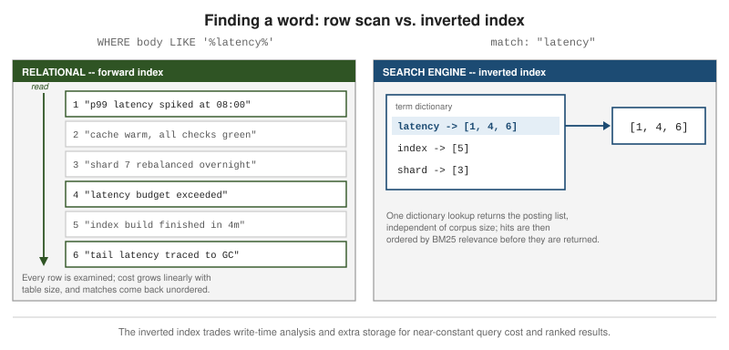

Choosing the Right Database
|
This page is a vendor-neutral overview of how the major database and search-engine categories differ and when each one is the right default. Unlike the SQL, MongoDB and Couchbase reference sections on this site, no single reference book or specification underpins it: the content was generated with the assistance of AI from general knowledge, and every concrete claim should be verified against each engine’s own current documentation before being relied on in production. Engine capabilities also move fast, so version matters: the Couchbase query-optimizer behaviour and Elasticsearch’s vector / kNN search surface in particular change between releases, and a statement that was true of one version may not hold for the one you run. Treat vendor-published comparisons with the same caution — they are self-serving by construction. Couchbase’s Couchbase vs. MongoDB page and MongoDB’s MongoDB vs. Couchbase page describe the same two products and reach opposite conclusions; read both, and neither in isolation. |
This page is a chooser. It walks the major database categories, says what each one is genuinely good and bad at, and ends with a decision flow for landing on a single engine — or, when the requirements really do diverge, on several engines kept consistent with CQRS. The per-engine reference detail lives in the sibling sections (SQL, MongoDB, Couchbase), which this page cross-links rather than restates. Start from the assumption that one relational database is the right default, and let a measured requirement — not a preference — push you off it.
Start With the Questions That Actually Decide It
Data outlives code. Application code is rewritten every few years; the data it wrote is still there a decade later, and the shape it was stored in constrains every query and migration after it. That makes the engine choice one of the hardest architectural decisions to reverse, so it is worth slowing down for.
Default to a relational database and move off it only for a named reason: a scale ceiling you have measured, an
access pattern relational indexes serve badly, a data shape that fights normalization, or a latency SLA a
general-purpose engine cannot hold. Before adopting a second engine, check whether a PostgreSQL extension covers
the need — JSONB for schemaless documents, pgvector for embeddings, the built-in full-text search for
lexical search, PostGIS for geospatial, TimescaleDB for time-series. One well-run database with a few extensions
is far less operational cost than two databases that have to be kept in sync.
Running more than one database on purpose is polyglot persistence: a system of record plus one or more specialized stores, each holding a derived copy of the data in the form its queries need. It is a legitimate architecture, but every extra engine adds a copy of the data that can drift, its own failure modes, its own backups and its own on-call burden. Once you have more than one store, keeping them consistent becomes the hard part — see Keeping Several Databases Consistent — CQRS.
The drivers that actually decide the category:
-
Data structure — rows with stable columns and relationships, self-contained documents, free text, graphs of connections, high-dimensional vectors, or append-only events.
-
Consistency requirements — does the domain need strict ACID and referential integrity, or can parts of it tolerate reading slightly stale data?
-
Read/write ratio and volume — read-heavy, write-heavy, or bursty; thousands of operations per second or millions.
-
Query patterns — known up front and fixed, ad hoc and exploratory, or relevance-ranked and fuzzy.
-
Scale — fits comfortably on one large node with read replicas, or must be sharded across many.
-
Latency SLA — a p99 in the tens of milliseconds is easy; a hard sub-millisecond budget rules most engines out.
Relational Databases (SQL)
The relational model — data as typed rows in tables linked by keys, queried with SQL — has been the default for decades because it fits most business data and most teams already know it. See the SQL Reference for the model itself and Normalization for how to shape a schema.
Strengths
-
ACID transactions and referential integrity. Multi-row, multi-table changes commit or roll back as a unit, and foreign keys, unique constraints and check constraints keep invalid data out at the storage layer rather than relying on every application to behave.
-
Declarative SQL over a cost-based optimizer. You describe the result you want; the planner picks indexes, join algorithms and join order from table statistics. Ad-hoc queries and joins across tables work without designing the access patterns up front — a property no other category on this page gives you for free.
-
Normalization. Each fact is stored once, so updates are cheap and there is no duplicated data to drift out of sync.
-
Mature ecosystem. Decades of ORMs, migration tools, BI and reporting tools, connectors, monitoring and operational know-how.
-
Modern JSON and extension coverage. Current PostgreSQL, MySQL, SQL Server and others store and index JSON columns, and PostgreSQL’s extension ecosystem (
pgvector, full-text, PostGIS, TimescaleDB) absorbs needs that used to require a separate engine.
Weaknesses
-
Scaling writes is hard under ACID. A single-primary relational database scales vertically — a bigger box — far further than most teams expect, but distributing writes across nodes while preserving ACID guarantees is genuinely difficult. Distributed SQL engines such as CockroachDB, Google Spanner and Vitess exist to do it, but they buy that scale with real operational and design complexity, and a relational database is not automatically the wrong choice just because the data is large.
-
Migrations get heavier over time. Schema changes on a large, busy table — adding a column with a default, changing a type, backfilling — need careful online-migration tooling as the table grows. See Evolving the Database Model for how to run these changes safely and consistently with a version-controlled migration tool.
-
Join and lock cost at high concurrency. Many-way joins and hot-row contention degrade under load; past a point you are denormalizing or caching anyway.
-
Object/relational impedance mismatch. Application objects rarely map cleanly to normalized rows, and the ORM layer that papers over the gap has its own failure modes — though this is a smaller problem in practice than it is often made out to be.
-
Recursive joins degrade on deep traversal. Following a relationship many hops deep (org charts, friends-of-friends, bill-of-materials) means a recursive CTE or repeated self-joins, and cost climbs with depth — this is where Graph Databases win.
-
No real text search.
LIKE '%term%'cannot use a normal B-tree index, so it scans, and it has no stemming, no typo tolerance and no relevance ranking. For anything beyond exact substring matching, see Full-Text Search Engines — Elasticsearch.
When to choose it
-
Structured data with stable relationships — the common case for transactional business systems.
-
Integrity-critical domains: finance, orders, inventory, anything where a half-applied change is unacceptable.
-
Ad-hoc and reporting queries whose shape is not known in advance.
-
A single, well-understood store the whole team can reason about — the right default until something forces a change.
Document Databases
A document database stores each record as a self-contained JSON-like document with a flexible per-record schema, and is built to scale horizontally across nodes. It suits data that is naturally a tree rather than a set of related tables.
Choose one when:
-
Records are self-contained aggregates — an order with its line items, a product with its variants — read and written as a whole.
-
The schema varies per record and evolves quickly, and you do not want a migration for every change.
-
You need horizontal scale-out of both reads and writes from the start.
-
Access is by key or by a known query shape, not open-ended ad-hoc joins.
-
Developer velocity matters: the stored shape matches the application object, so there is no ORM mapping layer.
The trade-offs against relational:
-
Consistency is tunable and often weaker. Reads can be served from secondaries that lag the primary; you choose the guarantee per operation.
-
No cheap arbitrary joins. Related data is either embedded (duplicated) or joined in the application or a pipeline stage, which is more expensive than a relational join.
-
Access patterns must be known before modelling. The embed-vs-reference decision bakes in which queries are fast; getting it wrong is a data migration. See Data Modeling for how to make that call.
-
Unbounded growth and duplication. Arrays that grow without limit and denormalized copies that must be updated in several places are the two recurring modelling hazards.
MongoDB vs. Couchbase
Both are distributed document databases, but they make different bets on the query surface, the optimizer and the latency profile.
| Dimension | MongoDB | Couchbase |
|---|---|---|
Query language |
Rich Query API plus the aggregation pipeline; JSON-structured queries and stages. |
SQL++ (N1QL) — SQL-like syntax over JSON, with real |
Optimizer |
Cost-based: index selection and plan choice use collection statistics. |
Historically rule-based: plan choice follows fixed rules, so index and key cardinality do not steer it the way a cost-based planner does. |
Indexing behaviour under load |
Secondary indexes and compound indexes chosen by the planner; index intersection is possible but usually a sign a better compound index is missing. |
Global Secondary Indexes on a dedicated Index service; too many overlapping GSIs can produce unexpected plans
and |
Caching / latency profile |
Relies on the OS page cache and WiredTiger’s cache; latency is good but less tightly bounded as working set grows. |
Memory-first managed cache with a masterless architecture; low, predictable key-value latency and stable index scans under concurrency. |
Consistency |
Primary-read consistency by default, tunable read/write concern, multi-document ACID transactions since 4.0. |
Strong-consistent key-value reads and writes, plus multi-document ACID transactions. |
Scaling model |
Range- or hash-sharded collections; each shard is a replica set. |
Masterless nodes with Multi-Dimensional Scaling — Data, Index, Query, Search and Analytics services scale independently. |
On the query surface, MongoDB pairs its Query API with secondary indexes and the
aggregation pipeline for grouping, joins ($lookup) and
transformation, while Couchbase’s SQL++ (N1QL) offers
SQL-like ad-hoc querying with genuine JOINs across documents. If your workload is query-, index- and
aggregation-heavy and the shapes keep changing, MongoDB’s cost-based planner adapts to that more readily.
Couchbase’s query optimizer has historically been rule-based, meaning the plan follows fixed rules rather than
statistics, so adding indexes to "help the planner" can backfire: too many Global Secondary Indexes produce
plans with IntersectScan that are slower than a single well-chosen index, and each array index can only cover
one array key. The vendor’s own
N1QL query performance guide and its
index-advisor
guidance recommend tuning the few hottest queries with targeted covering indexes and pushing multi-array or
multi-predicate search into FTS rather than adding more GSIs. See
Indexes & Views for the mechanics.
The flip side of that is latency. Couchbase’s memory-first managed cache and masterless design give it low, predictable key-value latency and index scans that stay stable as concurrency rises — Couchbase’s own concurrent-query testing is the argument for that — at the cost of sharper degradation when many secondary indexes and complex ad-hoc queries pile onto the same nodes. Multi-Dimensional Scaling (Getting Started) mitigates this by moving the Index and Query services onto their own nodes.
On consistency, Couchbase gives strong-consistent key-value access plus multi-document ACID transactions (Concurrency, Locking & Durability); MongoDB gives primary-read consistency with tunable read and write concern, and multi-document transactions since 4.0 (Transactions).
As a rule of thumb: reach for MongoDB when query, index and aggregation flexibility dominates the workload, and for Couchbase when predictable low latency with a small, carefully tuned index footprint dominates. Treat any head-to-head benchmark as workload-specific — and note that both vendors publish comparisons of the other, each reaching the opposite conclusion.
Full-Text Search Engines — Elasticsearch
Full-text search is one of the most common reasons to add a second store — in practice more common than a graph
or a vector need. As soon as users expect to type words and get ranked, typo-tolerant results, a relational
LIKE stops being enough and a dedicated search engine (Elasticsearch, or its
OpenSearch fork) earns its place.
How the inverted index works
A relational table is a forward index: given a row, you can read its columns. To find every row whose body
contains a word, the database has to read every row and test it, because LIKE '%term%' cannot use a B-tree.
A search engine builds the opposite structure — an inverted index. Every document is analyzed into terms at write time, and the engine stores, for each term, a postings list: the IDs of the documents containing it, plus the term frequency and token positions in each. A query for a word is then one dictionary lookup followed by a walk of that term’s postings list — the cost is roughly independent of the total number of documents.

Results come back ranked by relevance, typically with BM25: a document scores higher when the query terms are
dense within it, and higher still when those terms are rare across the whole index, so a match on an unusual word
outweighs a match on a common one. Ranking is something a relational LIKE cannot do at all.
The other thing the engine does that LIKE cannot is the analysis chain applied at both index and query time:
tokenization, lowercasing, stemming (running matches run), synonym expansion, stop-word removal,
fuzzy/edit-distance matching for typos, phonetic and n-gram matching for partial words, and per-language
analyzers. See Elastic’s
how full-text search works and
what full-text search is.
Strengths
-
Relevance ranking out of the box, tunable per field and per query.
-
A rich query DSL — boolean, phrase, proximity, wildcard, fuzzy, boosting.
-
Faceting and fast aggregations — counts by category, histograms, date ranges — computed from the same index.
-
Horizontal scale to billions of documents via sharding and replicas.
-
Near-real-time visibility: new documents are searchable within about a second.
-
Geospatial queries and kNN / vector search, enabling hybrid lexical + semantic retrieval in one engine.
-
The Kibana / Logstash / Beats ecosystem for log and event analytics; OpenSearch offers the same model under an Apache-2.0 licence.
Weaknesses and when not to use it
-
Not a system of record and not transactional. No multi-document ACID, eventual consistency by default, and no real joins — relationships are denormalized into the document at index time.
-
JVM- and memory-heavy. Heap sizing, garbage collection and node memory are ongoing operational concerns.
-
Write-amplified, resource-intensive indexing. Every document runs the full analysis chain and updates many postings lists; heavy write workloads cost real CPU and I/O.
-
Costly to tune at scale. Shard count and size, mapping design and "mapping explosions" from dynamic fields all bite as the index grows.
-
Mapping changes usually mean a reindex. Changing a field’s type or analyzer is not an in-place migration.
See this pros-and-cons summary for a longer list.
Feeding it from the system of record
Keep the relational or document database authoritative and treat the search index as a derived read model. The application writes only to the primary; the index is kept up to date by either an outbox the indexer consumes, or — more robustly — log-based change data capture: Debezium tails the PostgreSQL write-ahead log, publishes row changes to Kafka, and a sink connector applies them to Elasticsearch. The application never writes to the index directly, so there is no dual-write to get wrong. See this walkthrough of a Debezium-to-Elasticsearch pipeline, and Keeping Several Databases Consistent — CQRS for the general pattern.
Vector Databases
A vector database stores embeddings — fixed-length arrays of floats produced by a model — and answers "nearest neighbours to this vector" queries using an approximate index (HNSW or IVF) so the search does not scan every vector. Most also support metadata filtering, so a similarity query can be constrained to a tenant, a date range or a category.
Use one when the query is semantic similarity rather than exact match:
-
Semantic search over documents.
-
Retrieval-augmented generation (RAG) — fetching the passages most relevant to a prompt.
-
Recommendations ("more like this").
-
Deduplication and near-duplicate detection.
-
Anomaly detection by distance from a cluster of normal points.
Strengths: purpose-built approximate-nearest-neighbour indexes, metadata filtering alongside the vector search, scale to billions of vectors, and hybrid retrieval that combines vector similarity with BM25 lexical scoring.
Choosing one
-
pgvectorin an existing PostgreSQL — under roughly 1—10M vectors, and whenever the embeddings belong right next to the relational rows they describe. No new engine to run. -
Pinecone — fully managed, zero-ops, and comfortable with spiky traffic; you pay to not operate it.
-
Weaviate or Qdrant — self-hosted, strong hybrid search and multi-tenancy.
-
Milvus — billion-scale workloads with a platform team to run it.
-
Reuse what you already run — Elasticsearch / OpenSearch kNN, Couchbase Vector Search (Search, Analytics & Eventing), MongoDB Atlas Vector Search (Special Indexes & Search), or Redis.
This category overlaps Full-Text Search Engines — Elasticsearch: a search engine that does both lexical and vector retrieval is one engine fewer to run than a separate search store and a separate vector store. See this survey of the main options.
Graph Databases
A graph database stores data as a property graph — nodes and the relationships between them, each carrying properties — and traverses it by index-free adjacency: each node holds direct pointers to its neighbours, so following an edge is a pointer hop, not a computed join. Traversal cost scales with the size of the subgraph you actually touch, not with the total data volume.
Reach for one when the relationships are the query, and are many-hop or variable-depth:
-
Social graphs and friend-of-friend recommendations.
-
Fraud and anti-money-laundering detection — rings and shared attributes across accounts.
-
Network, service and IT-infrastructure topology.
-
Identity and access graphs — who can reach what, transitively.
-
Knowledge graphs, including GraphRAG.
-
Supply-chain and software-dependency analysis.
Strengths: deep and variable-length traversals stay cheap where recursive SQL joins do not; declarative path queries in Cypher, openCypher or the ISO GQL standard; and a flexible schema that lets new relationship types be added without migration.
Weaknesses: a graph database is not a general-purpose system of record. It is weaker at high-volume tabular transactions, at large aggregate scans and BI-style reporting, and whole-graph analytics (PageRank over the entire graph) is expensive. The ecosystem is smaller than the relational one. The standard deployment shape is a graph store alongside the relational system of record, holding a projection of the connections. See Neo4j’s graph vs. relational comparison and this overview.
The Other Categories at a Glance
Key-value stores (Redis, DynamoDB, Aerospike) do exact-key get/put at very low latency and nothing else — no range scans over values, no ad-hoc queries. They are the right tool for caching, sessions, rate limiting,
feature flags and leaderboards, usually as a companion to a system of record rather than as one.
Wide-column stores (Cassandra, ScyllaDB, HBase, Bigtable) are masterless, take very high write throughput, and scale close to linearly by adding nodes, leaning AP (available under partition) rather than CP. The catch is that the query patterns must be designed into the table layout up front — you model tables per query, and a query the schema did not anticipate is not possible without a new table.
Time-series databases (InfluxDB, TimescaleDB, Prometheus) are built for append-heavy, timestamped data: efficient ingestion, automatic retention and downsampling, and first-class time-range and windowing queries. They suit metrics, telemetry, IoT and event streams; this comparison covers why a general-purpose relational schema struggles with that workload at volume.
Columnar / OLAP stores (ClickHouse, Apache Druid, DuckDB, and cloud warehouses) store data by column and use vectorized execution, so aggregate scans over billions of rows — sums, group-bys, funnels — run orders of magnitude faster than on a row store. They are analytical, fed from the system of record on a schedule or a stream, not written to directly by the application.
Many of these needs a modern PostgreSQL absorbs with an extension before a second engine is warranted; see this taxonomy of database types for the wider landscape.
Keeping Several Databases Consistent — CQRS
Once a project runs a system of record plus a search index plus a cache plus a vector store, the data exists in several places and consistency becomes the hard part. Command Query Responsibility Segregation (CQRS) is the pattern that makes this manageable: separate the model that writes from the models that read.
The command/query split
The command (write) side owns exactly one source of truth, with full ACID guarantees. It accepts changes, validates them against invariants, and persists them — and nothing reads application queries from it directly.
The query (read) side is one or more projections, or read models, each held in whichever engine serves its queries best: a denormalized relational view for reporting, an Elasticsearch index for search, a Redis cache for hot lookups, a graph for traversal, a vector index for similarity. Each projection is disposable and rebuildable.
How the stores stay in sync
The write side emits events describing what changed, and each read model subscribes and updates itself. The trap is that "write the database, then publish an event" is two operations that can partially fail, leaving the projections permanently out of step with the source of truth.
The fix is the Transactional Outbox: within the same local transaction that persists the state change, write a
row to an outbox table describing the event. The transaction commits both or neither. A relay then ships the
outbox rows onward — and log-based CDC (Debezium reading the database’s transaction log) is the robust way to
do that relay, rather than polling the table. Pairing this with Event Sourcing — keeping the ordered log of
events as the source of truth — lets any projection be rebuilt from scratch by replaying the log.
source of truth)] Outbox[(Outbox table)] end Outbox --> CDC[Log-based CDC
Debezium] CDC --> Broker[Broker
Kafka] Broker --> Search[(Search index)] Broker --> Cache[(Cache)] Broker --> Vector[(Vector store)] Broker --> Analytics[(Analytics store)] Search --> Query[Query API] Cache --> Query Vector --> Query Analytics --> Query Query --> Client[Read path]
What it costs you
The write database stays strongly consistent, but the projections are eventually consistent — typically sub-second behind, occasionally more when a consumer is catching up. The visible symptom is a user not seeing their own change immediately. The standard remedies for read-your-own-writes: serve that one flow from the write store instead of the projection, show a "pending" indicator until the projection confirms, or briefly pin the user’s session to the write model after a write.
When it is worth it — and when it is not
It is worth it when the read and write needs genuinely diverge: many different query shapes over the same data, a heavy read/write asymmetry, several specialized read stores, joins that stay slow even after indexing, or multi-tenant analytics alongside transactional writes.
It is not worth it for a simple domain with a handful of uniform reads, or for a team that cannot absorb the broker, the consumers, the monitoring and the reprocessing tooling that CQRS drags in. For those cases a single database with read replicas is almost always enough. See Microsoft’s CQRS pattern, Red Hat’s illustrated CQRS, Debezium on CQRS with CDC and Event Sourcing vs. CDC.
Putting It Together
| Category | Data model | Consistency | Scaling model | Best-fit query pattern (example engines) |
|---|---|---|---|---|
Relational |
Typed rows in related tables |
Strong ACID |
Vertical; distributed SQL for horizontal |
Ad-hoc queries and joins, integrity-critical writes (PostgreSQL, MySQL, SQL Server) |
Document |
Self-contained JSON documents |
Tunable, often weaker |
Horizontal sharding |
Read/write whole aggregates by key or known shape (MongoDB, Couchbase) |
Search engine |
Analyzed text in an inverted index |
Eventual |
Horizontal shards + replicas |
Relevance-ranked full text, faceting, log analytics (Elasticsearch, OpenSearch) |
Vector |
Embedding vectors + metadata |
Eventual |
Horizontal |
Nearest-neighbour similarity, RAG (pgvector, Pinecone, Qdrant, Weaviate, Milvus) |
Graph |
Nodes and relationships (property graph) |
Strong, single-node-ish |
Vertical; some clustered |
Many-hop and variable-depth traversal (Neo4j) |
Key-value |
Opaque value by exact key |
Strong per key |
Horizontal |
Sub-millisecond point lookups: cache, sessions (Redis, DynamoDB, Aerospike) |
Wide-column |
Rows keyed by partition + clustering columns |
Tunable, AP-leaning |
Linear horizontal |
High-volume writes on pre-designed access paths (Cassandra, ScyllaDB, HBase) |
Time-series |
Timestamped points and series |
Eventual / relaxed |
Horizontal |
Time-range and windowed queries over append-only data (InfluxDB, TimescaleDB, Prometheus) |
Columnar / OLAP |
Column-oriented storage |
Batch / eventual |
Horizontal, read-optimized |
Large aggregate scans and group-bys (ClickHouse, Druid, DuckDB, warehouses) |
relationship traversal?} Graph -->|yes| GraphDB[["Graph -- Neo4j"]] Graph -->|no| Search{Relevance-ranked full text,
faceting or log analytics?} Search -->|yes| SearchDB[["Search engine -- Elasticsearch / OpenSearch"]] Search -->|no| Vec{Similarity search over
embeddings?} Vec -->|yes| VecDB[["Vector -- pgvector / Qdrant / Milvus"]] Vec -->|no| Doc{Self-contained aggregates with a
schema that varies per record?} Doc -->|yes| DocDB[["Document -- MongoDB / Couchbase"]] Doc -->|no| Scale{Extreme horizontal
write scale?} Scale -->|yes| WideCol[["Wide-column -- Cassandra / ScyllaDB"]] Scale -->|no| KV{Sub-millisecond
key lookups?} KV -->|yes| KVDB[["Key-value -- Redis / DynamoDB"]] KV -->|no| TS{Time-range telemetry?} TS -->|yes| TSDB[["Time-series -- InfluxDB / TimescaleDB"]] TS -->|no| OLAP{Large aggregate scans?} OLAP -->|yes| OLAPDB[["Columnar / OLAP -- ClickHouse / Druid"]] OLAP -->|no| Stay[Stay relational] GraphDB --> Multi{More than one of
these needed?} SearchDB --> Multi VecDB --> Multi DocDB --> Multi WideCol --> Multi KVDB --> Multi TSDB --> Multi OLAPDB --> Multi Multi -->|yes| CQRS[["Adopt CQRS -- keep stores in sync via outbox + CDC"]] Multi -->|no| Done[One specialized store alongside the system of record]
Don’t over-engineer. One well-run PostgreSQL, with its extensions and a read replica or two, handles far more data and far more query variety than most teams expect — and it does so with one backup strategy, one failure model and one thing to monitor. Every additional engine is another copy of the data that can drift and another system on call. Add one only when a specific, measured requirement forces it.
Bibliography
SQL vs. NoSQL
MongoDB and Couchbase
-
Couchbase Blog — Testing MongoDB and Couchbase concurrent query performance (vendor-published comparison).
-
Couchbase — Couchbase vs. MongoDB (vendor-published comparison).
-
MongoDB — Couchbase vs. MongoDB (vendor-published comparison).
Elasticsearch and change data capture
CQRS and the transactional outbox
Vector databases
Graph databases
Other categories